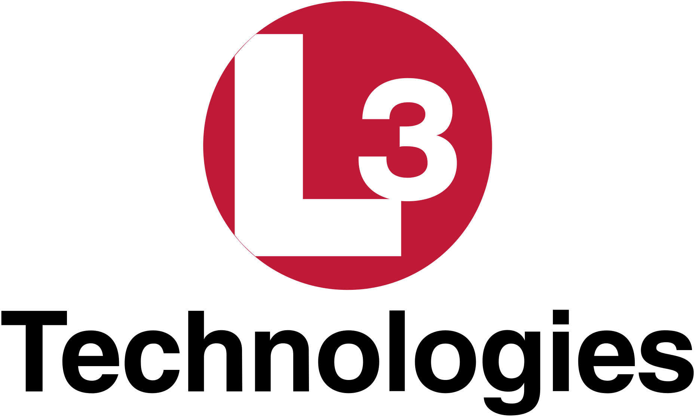
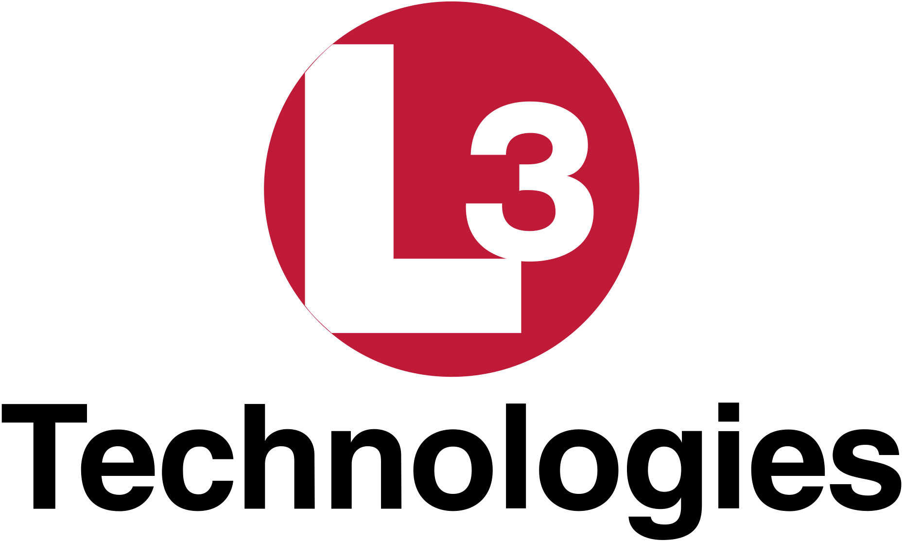

The dedicated students in our organization are the driving force behind everything we do and accomplish. At over 60 members strong, Sun Devil Rocketry is proud to have a diverse and wide-reaching membership. Meet some of our members and see what you can accomplish as a member of SDR!

Sun Devil Rocketry (SDR), formerly Daedalus Astronautics, is an organization within Arizona State University’s Ira A. Fulton Schools on Engineering. The structure of the club is multifaceted and deeply rooted in research and development of rocketry technologies, as well as community involvement and professional strengthening of its members. It is comprised of three research teams, two introduction teams, and an outreach initiative.
Mainstream propulsion technology is categorized into three groups describing the state of matter of a rocket’s fuel and oxidizer: Solid, Hybrid, and Liquid. Each research team specializes in one propulsion system and focuses on conducting innovative projects in that area. SDR believes that rocketry should be accessible to everybody, even with no prior experience. The Introduction Teams are designed to instruct new members from modeling a rocket digitally all the way to launching it in the desert. SDR has long-standing relations with local elementary schools. Throughout the year, club members visit classrooms to teach the basics of rocketry and walk students through building their own rocket.


 



Sun Devil Rocketry's team of student leaders help propel our organization to new heights!
Erica is currently a junior in Aerospace Engineering.
As head administrator, she is responsible for supporting operations and enhancing the
club's ability to pursue new initiatives. In addition, she is the outward face of the
club to stakeholders, building our footprint in the community. Erica is a long-standing
member of SDR Solid Propulsion Research and enjoys playing electric guitar and crocheting.
James is currently a senior in Aerospace Engineering.
As Vice President, he supports the development, manufacturing, and testing conducted
by SDR's propulsion research teams. Additionally, he is the club's Liquid Propulsion
Lead, spearheading development of SDR's bi-propellant liquid platform. James is also
involved in ASU's Tau Beta Pi chapter and is an avid runner.
Cody is currently a junior in Aerospace Engineering. As Treasurer, he manages the club's financial outlook and is responsible for expanding our relationships with local partners. Previously a team lead for the Introductory Challenge, Cody is now a member of SDR Liquid Propulsion Research.
Nitish is a sophomore studying Computer Systems Engineering. As Outreach Coordinator, he is responsible for planning and executing events on- and off-campus that allow SDR to give back to its community. Nitish is also a second-year member of SDR Liquid Propulsion Research, focusing on data acquisition and control systems. He is also involved in FURI, Air Devils, Sun Devil Alka Rocketeers, and SEDS: Rocketry.
Will is a Mechanical Engineering major, minoring in Physics. As Safety Officer, he is in charge of ensuring safe practices are being followed during the club's research and development activities, as well as communicating with EHS to provide the club with the resources they need to be productive in a safe environment. His favorite parts about Sun Devil Rocketry are its inclusivity and welcoming atmosphere, and how anybody can join and learn about rocketry, regardless of skill level.
Garrett is a senior studying Aerospace Engineering. Having previously held positions as Safety Officer and Intro-Team Lead, he is now our Hybrid Propulsion Lead in his fourth year at SDR. He is focused on completing a novel Pancake Motor prototype, designing traditional hybrid motors, and supporting development of SDR's first hybrid rocket. Garrett champions networking, professional development, and member inclusivity, and is passionate about food, airplanes, and playing with dogs.
Isabelle is a sophomore studying Chemical Engineering. It is her second year in the club and she is currently an Intro Team Lead. Outside of rocketry, she is also involved in several language clubs and enjoys reading.
Nothing we do would be possible without the support of our donors, corporate sponsors, and talented membership. Be part of the future of aerospace, and support Sun Devil Rocketry today!